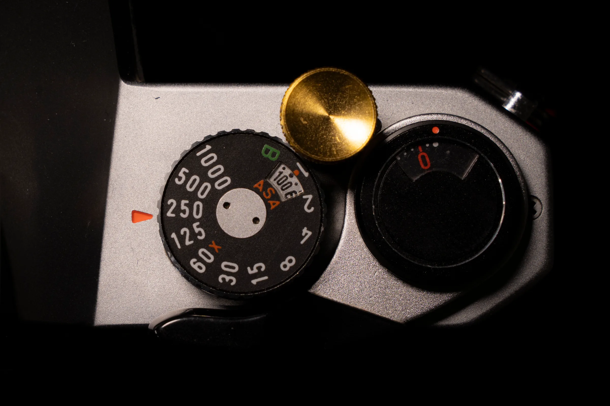
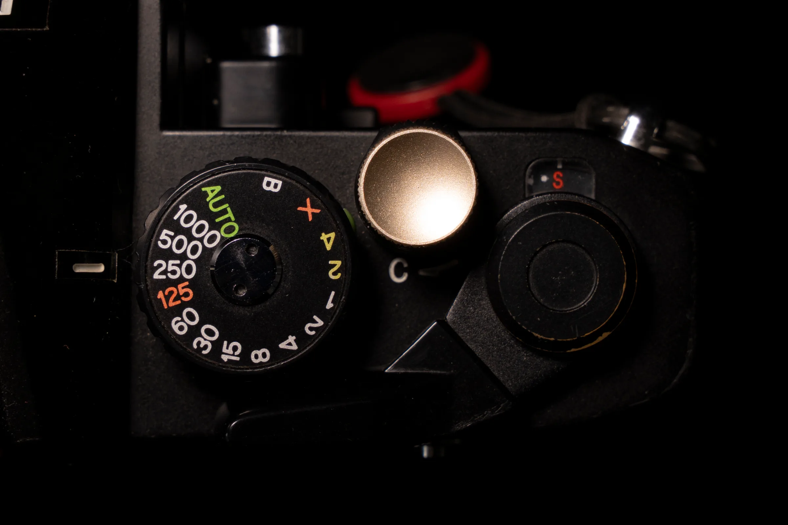
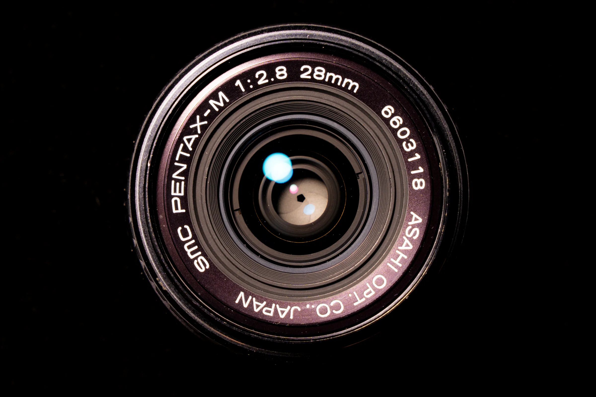
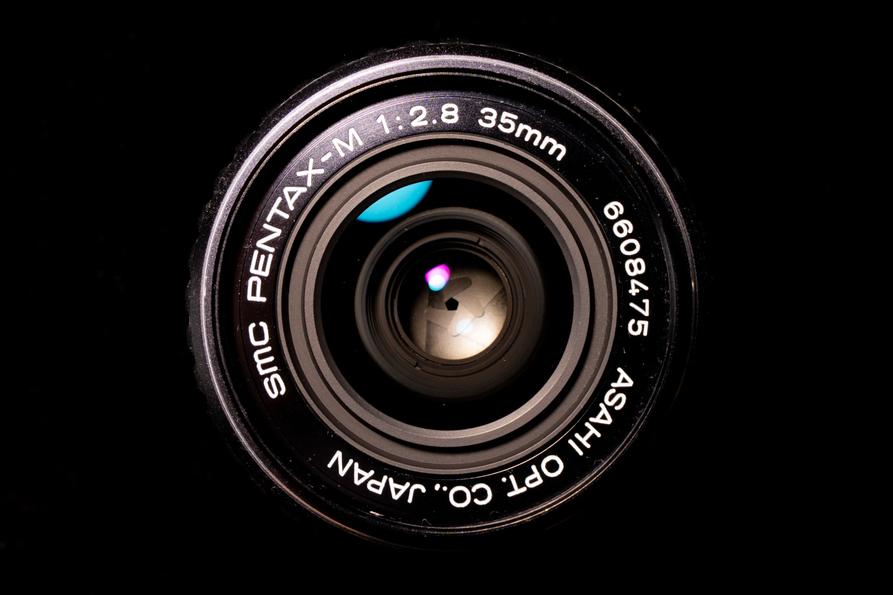
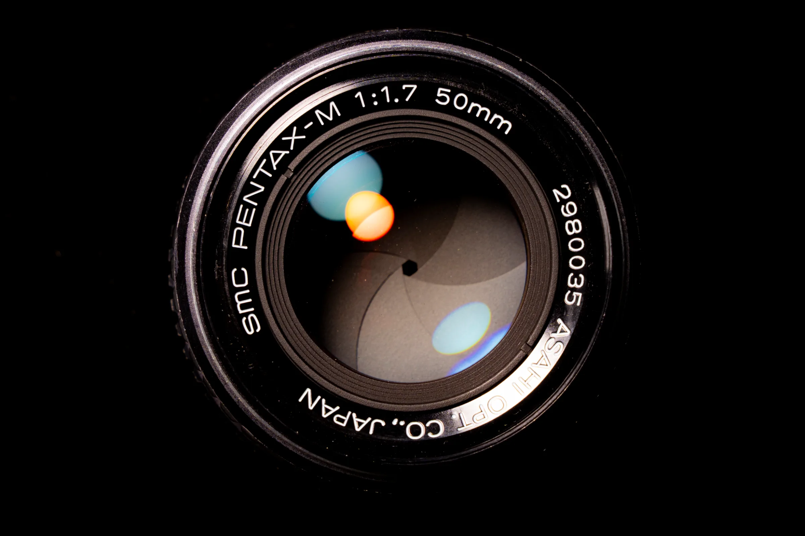
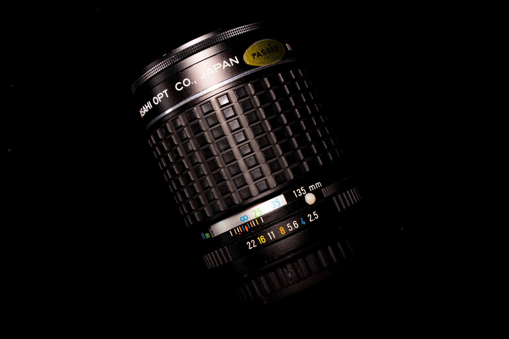

35mm SLR system · Six cameras and lenses
A quieter study of compact SLR bodies and familiar focal lengths in the Pentax K system.

Camera body · Review in preparation


Lens · Review in preparation


